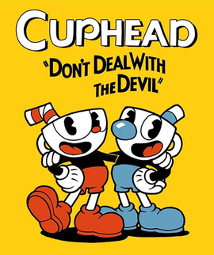

Cuphead
Cuphead é um jogo eletrônico de run and gun e plataforma criado pelos irmãos canadenses Chad e Jared Moldenhauer através da Studio MDHR. O jogo foi inspirado no estilo de animação Rubber hose (em português, "mangueira de borracha") usado em desenhos animados da Era de Ouro da animação americana, como o trabalho dos estúdios Fleischer Studios, Warner Bros. Cartoons e Walt Disney Animation Studios, procurando manter a obra em qualidades subversivas e surrealistas. O jogo foi lançado em 29 de setembro de 2017 para Xbox One e Microsoft Windows.
Cuphead apresenta dois jogadores que controlam o personagem-título e seu irmão Mugman, em uma aventura através da fictícia Inkwell Isle para derrotar uma série de chefes para pagar uma dívida adquirida com o diabo.[4] O jogo foi elogiado por seu estilo de arte, jogabilidade, trilha sonora e dificuldade. Foi um sucesso de crítica e comercial, ganhando vários prêmios e vendendo mais de seis milhões de cópias em três anos.[5] Uma expansão, sob o subtítulo The Delicious Last Course, está prevista para lançamento em 30 de junho de 2022.[6] Uma série animada baseada no jogo, intitulada The Cuphead Show!, produzida pela Netflix, estreou em 18 de fevereiro de 2022.
História
No lugar fictício de "Ilha Tinteiro", Xicrinho (nome de Cuphead na adaptação brasileira do jogo) e seu irmão Caneco (nome de Mugman na adaptação brasileira do jogo) são dois garotos amantes da diversão que vivem sob o olhar atento do Velha Chaleira. Contra os avisos do ancião, os irmãos se aventuram longe de casa, acabam entrando no Cassino do Diabo e começam a jogar dados. Após uma série de vitórias, o próprio Diabo se oferece para aumentar as apostas, dizendo que se Xicrinho e Caneco puderem ganhar mais uma rodada, eles receberão todo o dinheiro no cassino, mas se perderem também perderão suas almas. Xicrinho perde no jogo de dados e junto a Caneco imploram por misericórdia. O Diabo faz um acordo com eles: se conseguirem coletar todos os "contratos de alma", que dão direito à posse das almas, de seus devedores fugitivos até a meia-noite do dia seguinte, eles poderão ter uma chance. Eles visitam o Velha Chaleira, que lhes dá uma poção que lhes permite disparar rajadas de seus dedos para ajudar em sua busca, mas também os adverte que os devedores podem se transformar em monstruosidades quando forem cobrados.
Os irmãos viajam pelas Ilhas Tinteiro (1, 2 e 3), lutando contra os moradores que perderam suas almas para o Diabo, a fim de obter seus contratos. Ao entrar na segunda ilha, o Velha Chaleira os aconselha a "fazer a coisa certa" quando encontrarem com o Diabo novamente. Na entrada da terceira ilha, aparece uma cena em que o Rei Dado adverte o Diabo sobre a haver "algo suspeito" sobre os garotos. Após enfrentar uma série de inimigos poderosos e reivindicar todos os contratos, eles retornam para o cassino e encontram o gerente, o Rei Dado, que bloqueia o caminho. Ele perdeu uma aposta com o Diabo, presumivelmente sobre se Xicrinho e Caneco seriam capazes de completar sua tarefa, e coloca os irmãos para jogar uma espécie de "jogo de tabuleiro", enfrentando alguns de seus capangas pelo caminho. Ele, finalmente, decide confrontar Cuphead e Mugman, mas é derrotado por eles, dando passagem para encontrar o Diabo.
O Diabo, ao ver os irmãos com todos os contratos que ele pediu, exige que eles entreguem os contratos em troca de "se juntar a sua equipe". Se o jogador aceitar, o Diabo transforma Xicrinho e Caneco em seus lacaios demoníacos e o jogo termina, com a tela inicial tendo sua música de trás para frente. Se o jogador declinar, o Diabo fica furioso com a recusa dos irmãos em honrar o acordo e os enfrenta pessoalmente. No fim, Xicrinho e Caneco triunfam sobre ele, e queimam os contratos de alma, liberando e devolvendo a alma de todos os devedores, que por sua vez honram os irmãos pela bravura e nobreza de seus atos com gritos de comemoração.
O jogo termina dizendo que: "Os irmãos prometeram nunca mais se meterem em encrenca, e eles não se meteram - até a próxima vez, é claro! Mas isso é outra história...", possivelmente aludindo ao conteúdo da DLC.
Jogabilidade
Além dos gráficos extremamente detalhistas e fiéis aos cartoons da Era de Ouro da animação americana, o jogo chama a atenção pela particularidade,[8] lembrando os jogos de plataforma dos anos 90 em 8 e 16 bit. É possível perceber referências a alguns desses jogos, como Contra, Mega Man X, Gunstar Heroes, Street Fighter III e Thunderforce (quando das fases aéreas).[9] As fases são repletas de inimigos, que atacam das mais diversas formas: saltando em direção ao jogador, caminhando ou atirando projéteis. O jogo também possui fases aéreas, com o personagem pilotando um avião, onde o objetivo é destruir os inimigos atirando projéteis e bombas. Outra referência a jogos vintage está no sistema de navegação entre fases através de um mapa ao estilo Super Mario World e Donkey Kong Country. A grande dificuldade do jogo também é um fator marcante.
Música
Outro fator decisivo na aclamação deste jogo é sua trilha sonora. Composta por Kristofer Maddigan, conta com uma equipe de 42 músicos e aborda essencialmente o jazz. São 56 faixas ao todo, passeando entre temas de jazz tradicional, swing, ragtime, em sua maioria instrumental. Até mesmo o samba-enredo é lembrado, na faixa Floral Fury. A trilha sonora também está disponível separadamente, para download em alta qualidade, além de possuir uma versão em vinil quádruplo de luxo.
Na semana de 14 de setembro de 2019, o álbum Selected Tunes da Cuphead liderou as paradas de sucesso da Jazz Albums Billboard.
Reconhecimento
Cuphead foi eleito em vários sites um dos melhores jogos de 2017.[23] A Techtudo explica o motivo de ser tão aclamado dizendo que: "Cuphead cativou a atenção do público por causa do seu visual, que homenageia desenhos animados da década de 30, e tem um gameplay run ‘n gun, muito similar com o clássico Contra. Após diversos adiamentos, o game finalmente foi lançado em 2017 e toda a espera valeu a pena, já que Cuphead é um excelente jogo de tiro em plataforma, com lindos gráficos e controles para nenhum jogador botar defeito".[24]
Na lista de 100 melhores jogos de 2017 pelo Metacritic Cuphead ficou em nono lugar.[25] A IGN colocou Cuphead como o terceiro melhor jogo de 2017 e completaram dizendo que: "Além de toda simpatia no visual, o game é recheado por chefões que oferecem algumas das melhores batalhas que já tive"[26] e o público do site o colocou também como o terceiro melhor de 2017.[27]
Prêmios
No The Game Awards 2017 Cuphead foi um dos grandes campeões da noite, veja a lista de prêmios:
- Melhor Direção de Arte
- Melhor Jogo Independente
- Melhor Jogo de estreia
The Cuphead Show!
The Cuphead Show!, no Brasil, denominada Cuphead - A Série, é uma animação de comédia baseada nos personagens e no mundo do videogame Cuphead. Com um estilo inspirado nos desenhos de Fleischer da década de 1930, acompanhamos as incríveis desventuras do impulsivo Xicrinho e seu cauteloso mas influenciável irmão Caneco em sua terra natal, as Ilhas de Inkwell. Eles sempre cuidam um do outro em qualquer situação. Enquanto Xicrinho está sempre aberto a qualquer aventura, sem ao menos considerar as consequências, Caneco é mais responsável, constantemente segurando a impulsividade do irmão e o salvando de várias enrascadas. Os dois encaram situações divertidas, mas também muito perigosas, incluindo batalhar um dragão de três cabeças, participar de um estranho programa de auditório, ajudar um grupo de fantasmas e até mesmo enfrentar o próprio diabo. Mas mesmo quase morrendo no fim do dia, os dois se divertem acima de tudo.
Um primeiro teaser foi lançado em junho de 2021, revelando que Wayne Brady daria a voz de King Dice.[35]
Em 18 de janeiro de 2022, a Netflix disponibilizou a primeira temporada da série, contendo 12 episódios.
Em 19 de agosto de 2022, foi lançada a segunda temporada, contendo 13 episódios.
Em 18 de novembro de 2022, foi lançada a terceira temporada contendo 11 episódios.[36]
Atualmente, não se há relatos da imprensa ou da própria empresa, que confirme uma quarta temporada.[37]
Referências
- «PlayStation Store - Cuphead» (em inglês). PlayStation Store. Consultado em 29 de julho de 2020
- «Cuphead Team». Studio MDHR. Consultado em 5 de julho de 2017. Cópia arquivada em 5 de julho de 2015
- Osborn, Alex (5 de julho de 2017). «CUPHEAD É EXCLUSIVO DA MICROSOFT E NÃO SERÁ LANÇADO PARA O PS4». IGN. Consultado em 23 de julho de 2017
- Com visual de desenho animado, "Cuphead" brilha com desafio e criatividade
- Minotti, Mike (28 de julho de 2020). «Cuphead launches on PS4». Venturebeat. Consultado em 15 de abril de 2021
- «Cuphead: The Delicious Last Course | DLC | Coming June 30th 2022». www.cupheadgame.com. Consultado em 19 de janeiro de 2022
- Digital, Olhar (18 de janeiro de 2022). «Netflix divulga primeiro trailer de 'The Cuphead Show'». Olhar Digital. Consultado em 19 de janeiro de 2022
- Ele derrotou todos os chefes de "Cuphead" sem tomar dano
- «FAQ: Cuphead - | Studio MDHR». | Studio MDHR (em inglês)
- «Lançado hoje "Cuphead", o game mais jazzístico que você já viu». www.bluezinada.com.br. Consultado em 29 de setembro de 2017
- «Jazz Albums Chart»
- «Cuphead». Metacritic (em inglês). Consultado em 16 de setembro de 2019
- Schilling, Chris (2 de outubro de 2017). «Cuphead review». PC Gamer (em inglês). Consultado em 21 de dezembro de 2019
- «Mages of Mystralia – [ revistaorganiza.com/category/tecnologia/ PC] Review». GameSpace.com (em inglês). 1 de junho de 2017. Consultado em 21 de dezembro de 2019
- «Cuphead Test (PC) - Auf Scherben zum Erfolg». www.gamestar.de (em alemão). 5 de outubro de 2017. Consultado em 21 de dezembro de 2019
- «Cuphead Review - Rise To The Challenge». GameSpot (em inglês). Consultado em 21 de dezembro de 2019
- «Review: Cuphead». IGN Brasil. 3 de outubro de 2017. Consultado em 21 de dezembro de 2019
- «Análise de Cuphead». Voxel. Consultado em 21 de dezembro de 2019
- «'Cuphead' Animated Comedy Series in the Works at Netflix | Hollywood Reporter». 9 de julho de 2019
| Cuphead | |
|---|---|
|  | |
| Classificação científica | |
|---|---|
| Produtora(s) | StudioMDHR Entertainment |
| Editora(s) | StudioMDHR Entertainment |
| Distribuidora(s) | Microsoft Studios |
| Diretor(es) | Chad Moldenhauer Jared Moldenhauer |
| Produtor(es) | Marija Moldenhauer Ryan Moldenhauer |
| Projetista(s) | Jared Moldenhauer |
| Escritor(es) | Evan Skolnick/td> |
| Programador(es) | Eric Billingsley Kezia Adamo Tony Coculuzzi Thomas Pryde |
| Artista(s) | Chad Moldenhauer |
| Compositor(es) | Kristofer Maddigan |
| Motor | Unity |
| Plataforma(s) | Xbox OneMicrosoft WindowsNintendo SwitchTesla MotorsPlayStation 4 |
| Lançamento | Microsoft Windows, Xbox One WW: 29 de setembro de 2017 Nintendo Switch WW: 18 de abril de 2019 PlayStation 4 WW: 28 de julho de 2020[1] |
| Género(s) | Run and gun Plataforma |
| Modos de jogo | Um jogador Multijogador |